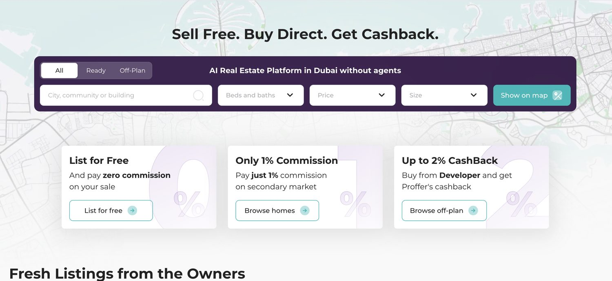
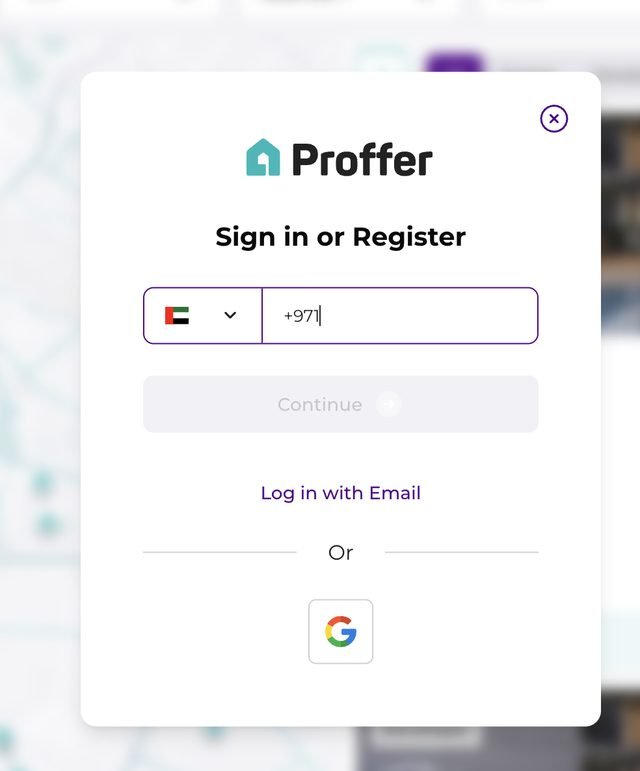
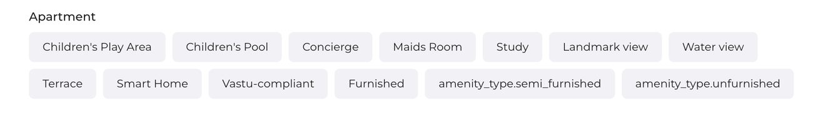

Why visitors leave a platform that promises no agents
A behavioral conversion diagnosis of Proffer.ae, an agent-free property platform in Dubai: what the analytics showed, what I found, and the order I recommended fixing it in.
The situation
Proffer.ae is a real estate platform for the Dubai secondary market with an unusual promise: buy and sell property without an agent, with the whole transaction completed online.
That promise is also the difficulty. Visitors have to believe the model is possible before they can want it, and in a market that has not worked this way before, the platform has to create that belief itself.
When I did the diagnosis, the client brief confirmed zero organic listings from owners, and analytics showed no completed transactions. Developer-listed off-plan properties were browsable. The owner-to-buyer listings that make the proposition different were not there yet.
Who the users are
Three groups of people meet this product, and each is deciding something different.
Sellers
Property owners who want to avoid agent fees. Listing a property worth AED 1M or more on an unfamiliar platform raises one question first: are there buyers here? They are used to sending property details to an agent on WhatsApp, may not want acquaintances to recognise their apartment in photos, and expect to negotiate, even at a fair price.
Buyers
People who would pay 1% on the secondary market instead of the typical 4% agent commission, and buyers of off-plan properties from developers. This is a high-consideration purchase, and some buyers prefer formal written contact to messaging apps.
Direct visitors
People who type the address or follow a link: 63% of all sessions. They are not searching for a particular property. They arrive to judge whether the platform deserves their attention.
The problem the numbers pointed to
The first signal came from analytics for 8 May to 8 June 2026. Visitors who arrived directly, the largest group, engaged 10.03% of the time and stayed five seconds on average. Visitors from organic search engaged 73.35% of the time and stayed 1 minute 16 seconds.
Engagement rate by traffic source
Source: GA4, 8 May to 8 June 2026.
That is the opposite of what you would expect. People who arrive directly tend to know the brand best, and here they were the first to leave.
The numbers show where visitors drop off. They don’t say why. The rest of the work was finding out why, and separating what the evidence supports from what is still a hypothesis.
How I worked
This was a diagnosis, not a checklist audit. A checklist asks whether common patterns are present. I wanted to know why this product, for these people, was losing them at the moment it did.
The work had two passes. First, an independent behavioral diagnosis: I went through the homepage, listings, property pages, registration flows and developer pages as a visitor would, and read what I saw against the GA4 data. Then I brought in a structured review of 50 outside observations and folded them into the diagnosis.
Every finding in the report follows the same six parts:
- EvidenceWhat is visible in the product.
- MechanismHow it holds conversion back.
- Conversion impactWho it affects, and where.
- Implementation directionThe kind of change needed.
- RecommendationThe specific changes.
- Validation anchorWhat you would observe once it is resolved.
Findings are ordered by behavioral priority: the order in which fixing them would do the most for conversion. Where something could not be verified, such as where the WhatsApp contact button on owner listings leads, I marked it as needing the founder’s confirmation instead of presenting it as a finding.
What I found
The report has six conversion findings and two on trust and experience. These three show the reasoning.
Finding 01
The homepage contradicts itself on commission

- What I saw
- Two neighbouring cards in the hero say “List for Free, and pay zero commission” and “Only 1% Commission, on the secondary market”. They share an identical format, and nothing says who each one applies to.
- Why it matters
- For a platform whose promise is removing agent fees, commission is the first thing a visitor weighs. Two claims that look incompatible read as a platform that can’t explain its own pricing, before any trust has been built.
- What I recommended
- Name the audience on each card, and set the 1% against what buyers would otherwise pay, the typical 4% agent fee, so it reads as a saving and not as a fee.
- How we’d know
- A new visitor can say, without guessing, who pays what.
Finding 02
Every first action is blocked by registration

- What I saw
- Saving a property with the heart icon, making an offer and listing a property each open a sign-in popup that asks for a phone number first. It doesn’t say what registering unlocks.
- Why it matters
- Registration is a commitment. A visitor who taps the heart is curious, not ready, and asking for a commitment at that moment turns curiosity into an exit. In a market where WhatsApp is the main channel, giving a phone number also carries a stronger expectation of contact than giving an email.
- What I recommended
- Let people browse, favourite and explore the map without an account, keeping favourites for the session. Ask for registration only when they act, to submit an offer or create a listing, with a short explanation of why.
- How we’d know
- A new visitor can browse, save and explore without meeting a registration prompt.
Finding 03
Small signals of an unfinished product add up

- What I saw
- The amenities filter shows raw database labels, “amenity_type.semi_furnished” and “amenity_type.unfurnished”, next to properly written ones. The Email button on property cards does nothing when clicked, with no error. Location data is missing on some cards.
- Why it matters
- Each one is small. Together they tell a visitor who may transact AED 1M or more that the platform isn’t finished, and that affects whether they come back.
- What I recommended
- Replace the raw labels with readable ones, make the email button open a contact action, and fill in location data on every card.
- How we’d know
- No raw database strings appear anywhere in the interface, and the Email button works.
Beyond the interface
Some of what limited conversion had nothing to do with the page.
Owner listings were sparse, and there was no visible proof that a direct deal had ever closed. A seller deciding whether to list a property of this value wants to know there are buyers, and developer listings don’t answer that. The report recommended recruiting a first set of owner listings through direct outreach, aiming for a credible sample rather than volume, and showing proof such as a completed deal once one exists.
Sellers also faced barriers that no homepage copy would remove: the habit of handing property details to an agent over WhatsApp, concern that acquaintances will recognise the property in photos, and the expectation of negotiation. The report recommended photo privacy controls, a WhatsApp-based way to start a listing, and a counter-offer step in the offer flow.
I said plainly in the report that these are not primarily CRO problems. They are market-activation challenges, and no messaging change substitutes for listing density or for accommodating how sellers actually behave.
One question belonged to the founder. The site says “Buy Direct”, yet developer pages offer a consultant and a team that reaches out. Is Proffer a marketplace or a service company? That is a business decision, so the report flagged it instead of resolving it.
What I recommended
The report ends with a nine-step roadmap, ordered by how much each step changes behavior and what it depends on.
Immediate
- Fix the value proposition contradiction. A copy change only.
- Fix the email contact button on property listings.
- Replace raw database labels in the amenities filter.
Near-term
- Remove the registration gate from browsing and favouriting.
- Restructure the homepage for direct-traffic visitors.
- Fill in missing location data and strengthen listing pages.
Strategic
- Recruit owner listings directly.
- Build seller-side barrier mitigation into the listing flow.
- Clarify the platform’s identity across all surfaces.
The first three need no design work or strategic decisions. I recommended finishing them before driving more traffic, because these problems reduce the value of every visitor the platform receives. The last three run in parallel as business development work.
This case study covers the diagnosis and the recommendations. It doesn’t report results from implementing them.
Inside the report
The full report is 11 pages. Here are three of them: the opening summary with scope and confidence, one complete finding, and the final part of the roadmap. Select a page to enlarge it.
Seeing visitors leave and not sure why?
Telling UX, messaging, pricing and traffic apart is the work I do. Send me the symptom and I’ll tell you what kind of investigation it needs.
Let's ConnectRelated article
CRO audit vs. UX audit: what’s the difference?Why a diagnosis is not a checklist, and how to tell which kind of investigation you need.
Read article